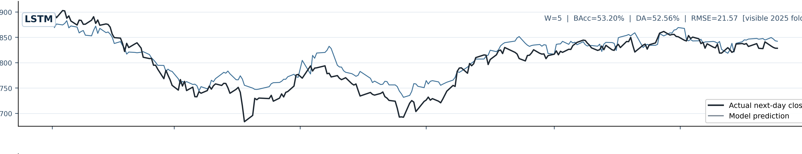

Point-in-time market data
SET50 daily index
2012-2025116 TA featurest → t+1

Observed and forecast traces are evaluated only after the next session becomes available.

Out-of-sample sentiment with date, ticker and relevance controls
Rolling 60-day decomposition vs matched Full-TA inputs
Market-only controls plus Bull/Bear/Leader sentiment audit
Bull/Sideway/Bear routing; train-only SHAP and LIME fidelity check
Later-period stress test and frozen SET100 robustness check
LSTM-CNN-Attention across four held-out years and five seeds
Selective forecasting gain; not shared by all architectures
Versus equal-call and near-cost controls; intrinsic endpoint